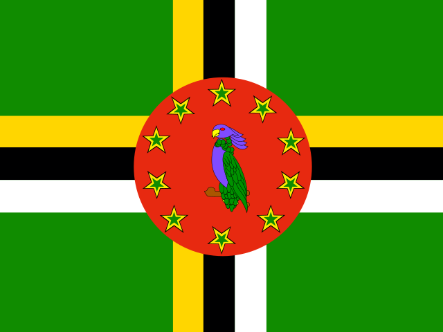

Dominica
Dominica is a parliamentary republic, located in the Caribbean. Christianity is the predominant religion. Its capital is Roseau. About 65,871 people live there (2025).
- Capital
- Roseau
- Population
- 65,871 (2025)
- Region
- Americas (Caribbean)
- Area
- 751 km²
- Demonym
- Dominican
- Languages
- English
- Form of Government
- Parliamentary republic
- Religion
- Christianity (83.7%)
Non-religious (9.4%)
Folk/Indigenous religions (1.1%) - Currency
- East Caribbean dollar (XCD)
- GDP
- $723.9M (2025)
Bordering countries
Dominica has no land borders.